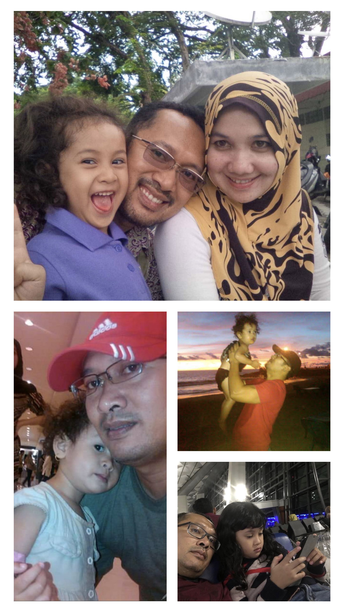

A LITTLE LETTER FROM YOUR DAUGHTER
For the man who will always have
a special place in my heart.
TAP THE ENVELOPE TO OPEN
There are a thousand ways to say I love you, but somehow, words never seem enough to describe how much you mean to me. So, I wrote this little letter, hoping it could express even a small part of the love I have for you.
Kaka mungkin nggak selalu bilang how much I love you, atau nunjukin rasa sayang kaka secara langsung. But deep down, Ayah will always be one of the most important people in my life. Kaka mungkin nggak selalu bisa mengungkapkan semuanya dengan kata-kata, tapi kaka harap Ayah nggak pernah meragukan betapa berharganya Ayah buat kaka. No matter what happens, you'll always have a special place in my heart.
Yah, kaka cuma mau Ayah selalu sehat dan bahagia. Jangan terlalu capek, ya. Kaka tahu Ayah punya banyak hal yang harus dipikirin, tapi jangan lupa buat istirahat juga. Kaka mungkin nggak selalu bilang, tapi kaka sayang banget sama Ayah. Kaka selalu berharap hal-hal baik datang ke hidup Ayah.
And Ayah, please don't forget to take care of yourself, okay? Jangan terlalu memaksakan diri dan jangan lupa bahagia. Kaka berharap hari-hari Ayah ke depannya dipenuhi banyak hal baik, lebih banyak alasan untuk tersenyum, dan lebih sedikit hal yang bikin Ayah merasa lelah. You deserve happiness too, Yah. Kaka ingin Ayah bisa menikmati hidup dengan tenang dan selalu diberikan kesehatan.
Thank you for everything, Yah. Terima kasih sudah selalu berusaha memberikan yang terbaik buat kaka, untuk semua hal kecil maupun besar yang mungkin sering kaka anggap biasa. Kaka tahu mungkin nggak semua perjalanan Ayah mudah, and I really appreciate every little thing you've done for me. Kaka mungkin belum bisa membalas semua kebaikan Ayah sekarang, but I hope one day I can make you feel as loved and appreciated as you deserve.
I may not be the perfect daughter, and I know there are still many things I need to learn. Tapi satu hal yang pasti, kaka sayang banget sama Ayah. Kaka berharap kita bisa terus tumbuh, saling memahami, dan menciptakan lebih banyak kenangan indah bersama. No matter how old I get, I'll always be your daughter, and you'll always be my beloved Dad.
